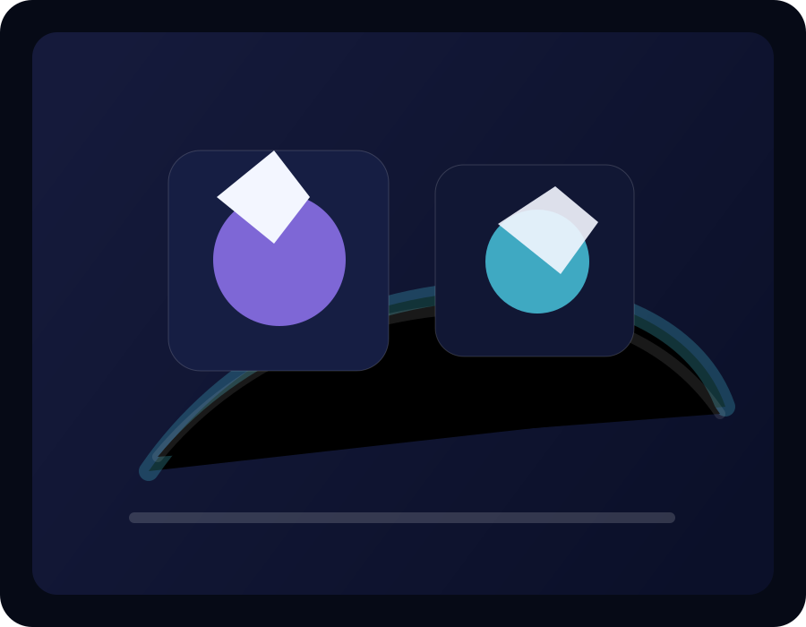
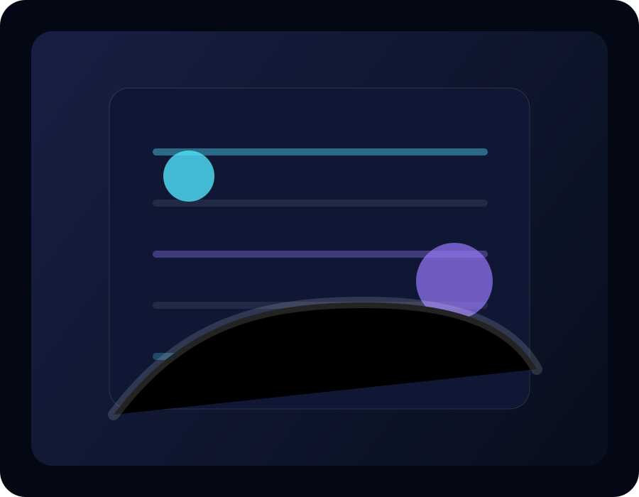
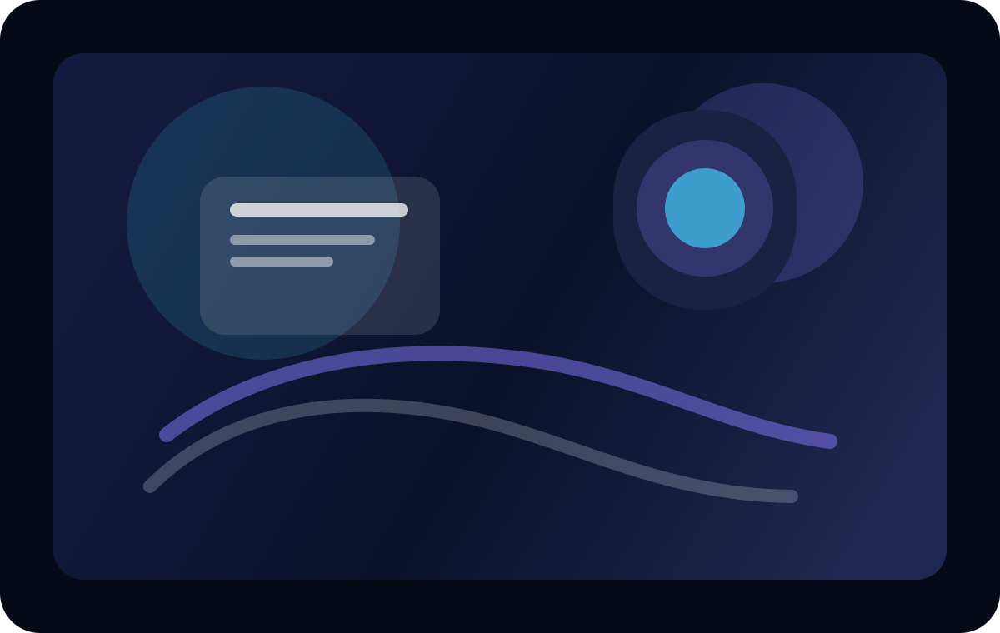

0
完成的奇想實驗
✦ 虛構人物 · 網球夢想家 · 霓虹策展人
在球場與夜色之間，總能把一場失敗變成下一次的光。
我是榮根潁，一個把網球、霓虹與謊言當成創作材料的虛構人物。每一次發球都像是在替未來留下顫動的光。
他常把失誤寫成黑白電影，然後在下一個夜晚把它們重新染成彩色。
完成的奇想實驗
造訪的霓虹城市
被誤認為命運的瞬間
關於我
他在凌晨 02:14 的球館裡練習發球，像是在跟一個看不見的觀眾證明，所有失誤其實都能被重新命名。
曾為霓虹球隊、夜色品牌與沉默劇院設計一套會在比分改變時發光的角色宇宙。
正在把球具、光影與語言編成一場會反覆上演的迷幻劇場，並把每個細節都當成新故事的種子。
人物檔案
每次發球前，他都會先看一眼天花板，像是在跟某個看不見的人打招呼。
他收藏每一個想像錯位的瞬間，因為他相信，真正值得留存的從來不是完美，而是那點不合時宜的光。
一支會發出微弱藍光的球拍、兩句沒人懂的笑話，以及一份永遠換不了的夜間行程表。
近期關注
從街景、影像與對話裡，收集那些容易被忽略、卻很有溫度的細節。
將內在感受轉為有節奏、有層次的視覺與敘事方式。
不斷嘗試新的媒介與形式，讓作品能在不同情境下被重新理解。
經歷與興趣
從影像、文字與空間感出發，慢慢建立屬於自己的創作語彙。
喜歡記錄城市裡的光影、人的情緒與短暫的瞬間，讓它們成為作品的養分。
希望用更親密、更有溫度的方式，讓作品走向更多人心裡。
幻影日誌

球館內的冷氣總帶著一種熟悉的金屬味，像是某些老舊夢境在心裡慢慢融化。

街燈越亮，他越容易相信這座城其實是為一個不肯離開的人精心布置的舞台。
更多細節
擅長把產品、氣氛與情緒串成一條像星河一樣流動的體驗線。

一組以霧、晶片、光譜與藍紫調構成的靜態情緒板。
事蹟與作品
為一個不存在的球隊設計一套會依照比分變色的神話系統，讓每一次發球都像是重啟一段傳說。
與一支跨城市的實驗團隊合作，讓每個凌晨兩點的語音都像從另一個宇宙掉下來，穿過灰暗的窗簾進入聽眾耳裡。
在一個臨時搭建的白色球館裡，投影、煙霧與回聲共同編織出一場不會重複的表演，讓每個觀眾都像在看見自己的第二個名字。
聯絡我
目前正接受品牌視覺、互動概念與作品集網站的合作邀約，歡迎來聊聊你的下一個世界。